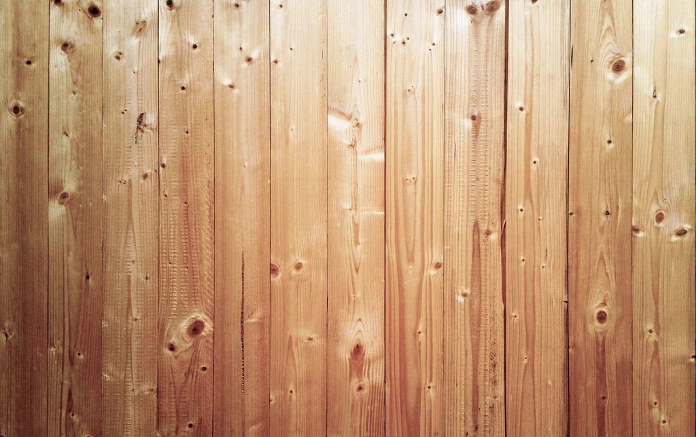
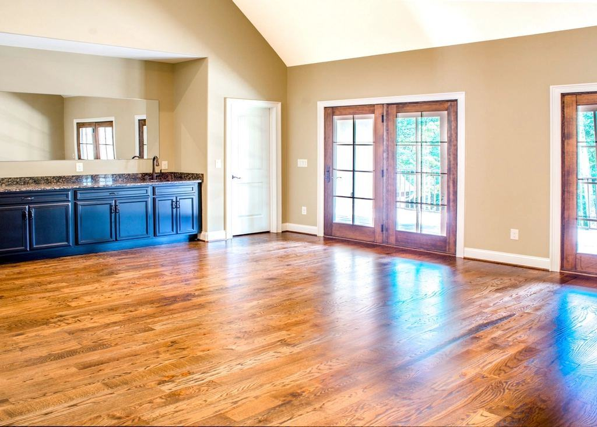

Tjänster
I dag är vi 26 anställda och arbetar nästan bara som underentreprenör åt byggföretag och golvläggare. Vi laserskannar varje bjälklag före avjämningen, pumpar massan med egna bilar och lämnar ett protokoll över planhet och fukt som golvläggaren kan lita på. Själva ytskiktet lägger vi aldrig – det gör våra kunder.
Vad ska läggas ovanpå?

Nyproduktion
I nya flerbostadshus gör vi avjämningen våningsplan för våningsplan efter stommen. Ett lag med pumpbil hinner 1 500–3 000 kvadratmeter om dagen.
Efter en dygns härdning kan planet gås på och efter några dagar är det klart för ytskikt.

Renovering och ombyggnad
I äldre hus är bjälklagen sällan plana. Vi skannar, lagar sprickor och gamla öppningar och jämnar ut nivåskillnader på upp till fem centimeter i ett enda moment.
Vid stambyten jämnar vi ut hela lägenheter medan rören är frilagda.

Golvvärme i avjämning
Tunna golvvärmesystem gjuts in i 15–25 millimeter avjämning, vilket passar både träbjälklag och gamla betongplattor. Golvet blir lågt och värmen jämn.
Rörläggaren monterar slingorna, vi provtrycker tillsammans och gjuter samma dag.

Lager och verkstäder
I lager där inget ytskikt ska läggas pumpar vi en slitstark industriavjämning som klarar truckar och pallyftar. Ytan kan dammbindas eller förseglas.
Stora ytor delas upp i fält och gjuts under helger när lagret står stilla.
Skannat, pumpat och protokollfört
- 1

Skanning och fuktmätning
Vi skannar bjälklaget och mäter fukten. Du får en planhetskarta och ett förslag på tjocklek och massa.
- 2

Förarbete
Dagen före slipar, lagar och primar vi ytan och sätter kantband och sargar vid dörrar och schakt.
- 3

Pumpning
Pumpbilen ställs utanför och slangen dras upp till planet. Massan sprids, piggrullas och får flyta ut.
- 4

Protokoll till golvläggaren
Efter härdningen skannar vi igen och lämnar protokoll över planhet och fukt till golvläggaren och byggledningen.
Mätt, certifierat och systemgaranterat
- RBK-auktoriserade fuktmätareTvå tekniker mäter fukt i betong enligt Rådet för byggkompetens manual.
- Utbildade av massleverantörernaAlla avjämnare har tillverkarnas certifiering för de system vi pumpar, vilket ger systemgaranti.
- Kvalitet och miljö enligt ISOCertifierat ledningssystem för kvalitet och miljö sedan 2017.
- Arbete på byggarbetsplatsID06, BAM-utbildning och Byggnads kollektivavtal för alla anställda.